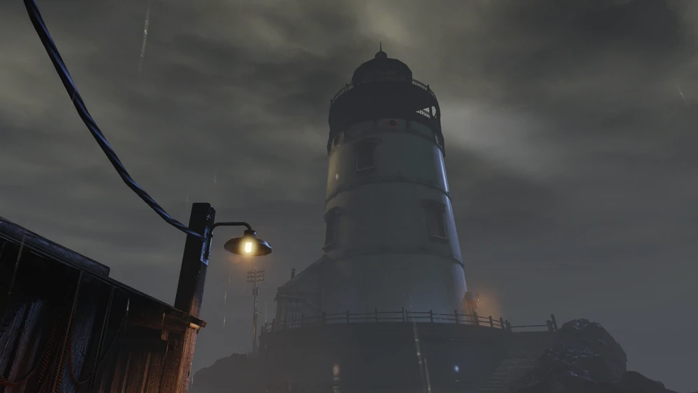
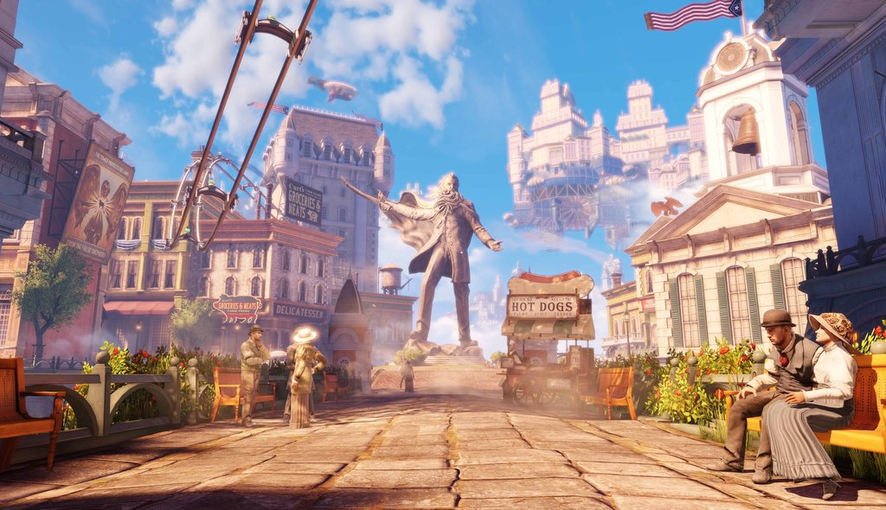

"Bring us the girl, and wipe away the debt", that was the deal.
The details elude me now.
But the details wouldn't change a goddamn thing.
| Developer(s) | Irrational Games, 2K Australia |
| Publisher | 2K Games |
| Date Released | March 26th, 2013 |
| Genre: | First-person shooter |
| Platform(s): | PC, Xbox 360, PlayStation 3, OS X, Linux, Xbox One, PlayStation 4, Nintendo Switch |
overview:

view of the lighthouse
BioShock Infinite is the third game in the series and takes place in the airborne city of Columbia in 1912,
where the player assumes the role of Booker DeWitt, a disgraced ex-Pinkerton agent. Booker has been given
the job of finding a mysterious and powerful woman imprisoned in Columbia since birth named Elizabeth in order
to wipe his debts away, andthe story follows the unlikely duo as they journey to escape the flying city
while discovering its twisted secrets.
Following in the footsteps of previous BioShock games, the world of Infinite explores the chaos that results when strong ideals are taken to an extreme. Here,
the philosophical concept of "American Exceptionalism" is perverted into ultranationalism, religious fanaticism, and social Darwinism.
Flags, patriotic music,and propaganda posters promote the idea that Columbia is a 'haven' from the so-called 'unwanted' of the world, as the player progressively learns more about its society,
inhabitants, and the darkness that lies within it.
plot:

the city of columbia
In 1912,Booker DeWitt is taken by the mysterious Lutece Twins to an island lighthouse
off the coast of Maine. With instructions from the Luteces to "bring us the girl and wipe away the debt",
DeWitt enters the structure which houses a rocket silo that transports him to the flying city of Columbia.
Booker's presence in Columbia goes unnoticed until a policeman identifies the letters "AD" branded on his hand.
This is a sign of the 'False Shepherd' which city leader and prophet,Zachary Comstock,
prophesied would 'lead the lamb (Elizabeth) astray' and bring about Columbia's downfall. Booker, now a wanted man, fights his way to Monument Island where Elizabeth is held within a tower.
Along the way, he discovers a large device called the Siphon and the ability Elizabeth wields which can open Tears,which will lead them to a unique adventure to solve the mystery of Elizabeth
and defeat zachary Comstock will they be succesfull?
Main Charcters:
Booker DeWitt
One thing I've learned: if you don't draw first,
you don't get to draw at all
― Booker DeWitt, to Elizabeth
Booker DeWitt is the protagonist of BioShock Infinite. He is a private investigator and, prior to his reluctant arrival in Columbia,
a former soldier and Pinkerton agent. Booker is offered a deal to wipe away his debts if he goes to Columbia and retrieves a girl imprisoned there.
Over the course of the story, Booker reveals his past experiences and shows his ability to make decisions independent of the player. Unlike Jack and Subject Delta,
Booker has his own personality rather than being a silent and faceless avatar for the player.
Elizabeth:
Booker... are you afraid of God?
But I'm afraid of you
― Elizabeth and Booker DeWitt
Elizabeth is the deuteragonist of BioShock Infinite, Burial at Sea - Episode 1, and the protagonist of Burial at Sea - Episode 2.(the two dlcs of the original) She is a 19 to 20 year old woman who has been imprisoned in the flying city of Columbia since she was an infant and who Booker DeWitt is sent to retrieve and bring to New York City unharmed. She is guarded by Songbird, a monstrous, winged creature who was both her keeper and only friend during childhood. However, she began to hate him as she grew up, seeing him as a warden prohibiting her freedom. Elizabeth has the power to manipulate Tears that exist in the fabric of time. When Booker frees her from her tower on Monument Island, the Founders, Zachary Hale Comstock, and Songbird are all determined to recapture her at any cost.
Zachary Hale Comstock
Lord forgives everything. But I'm just a prophet…
so I don't have to.Amen.
― Father Comstock
Zachary Hale Comstock is the leader of The Founders, the ultra-nationalist/nativist political party that founded the floating city of Columbia, and the main antagonist of BioShock Infinite. Within Columbia, Comstock has earned the titles of "Prophet" and "Father Comstock." He claims to have the ability to predict the future of Columbia, attacks from his enemies, and the actions of the False Shepherd.
Development:
ken levine the creative director
and lead writer
BioShock Infinite was developed by Irrational Games and published by 2K Games, with Ken Levine working on the game as the creative director and lead writer. Irrational and Levine, who had previously developed the original BioShock, passed on the opportunity to work on the sequel BioShock 2 in favor of a new BioShock game with a different setting,with Take-Two Interactive allowing them the freedom to develop it.Work on Infinite began in February 2008, with the game's concept being formed six months after the original BioShock's release.Under the moniker "Project Icarus",Irrational worked in secrecy on Infinite for two-and-a-half years prior to its announcement on August 12, 2010.The game's development took about five years, with it finally announced as going gold on February 19, 2013.Irrational's work on the game required a team of about 200 people,while also receiving substantial assistance from developer company 2K Australia, which was formerly part of Irrational Games.
Trailer/Screenshots:
Sound Tracks
| Will The circle be Broken | |
| God Only Knows | |
| Goodnight Irene | |
| Babtism |
Buy now
You can get it now for your Xbox click on the link below